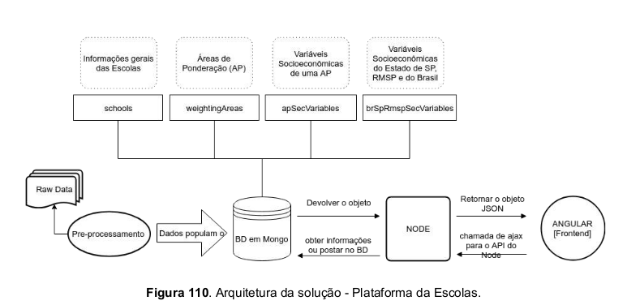
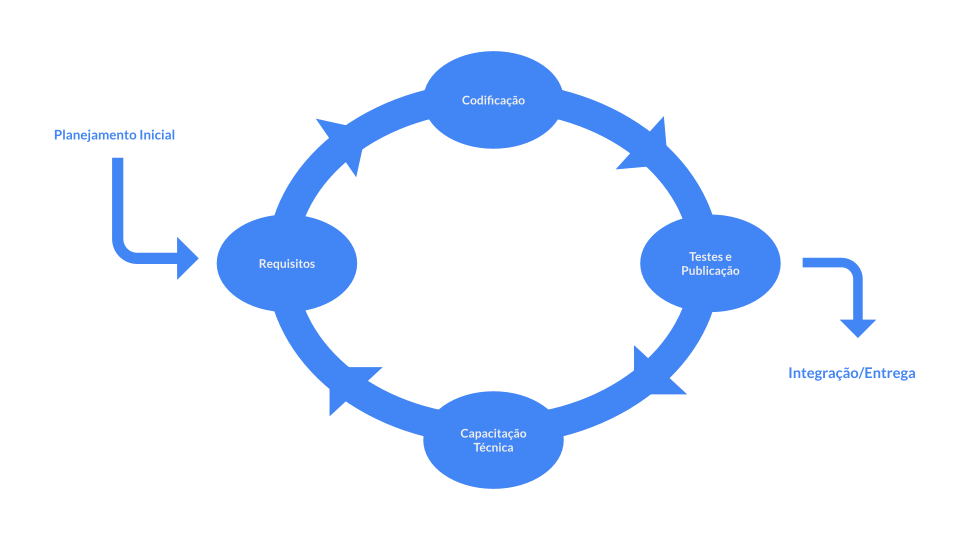
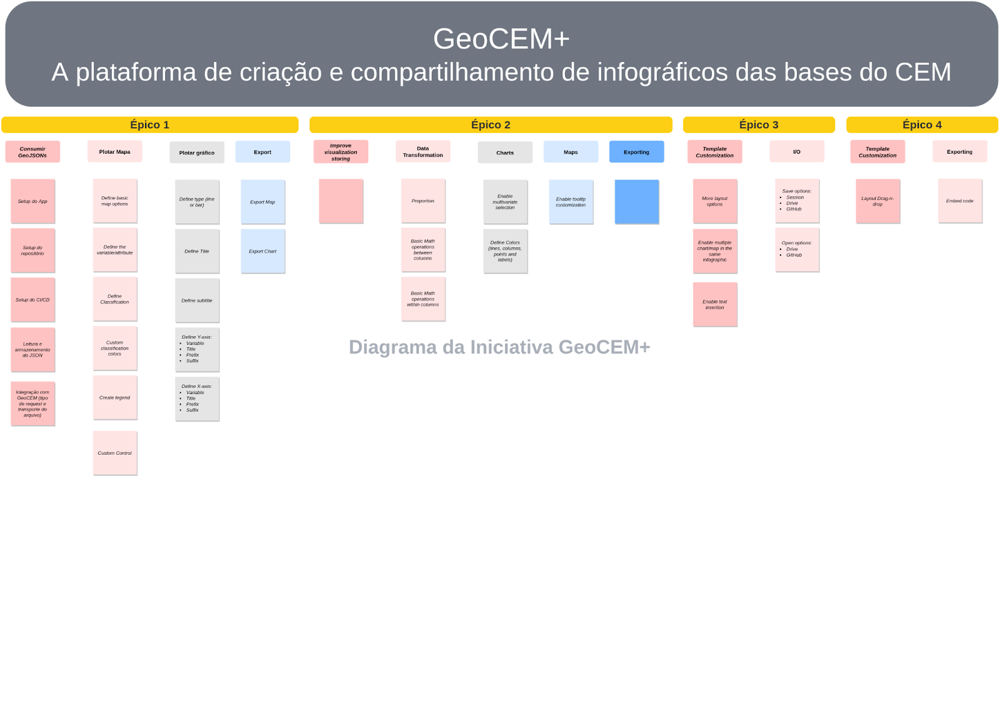
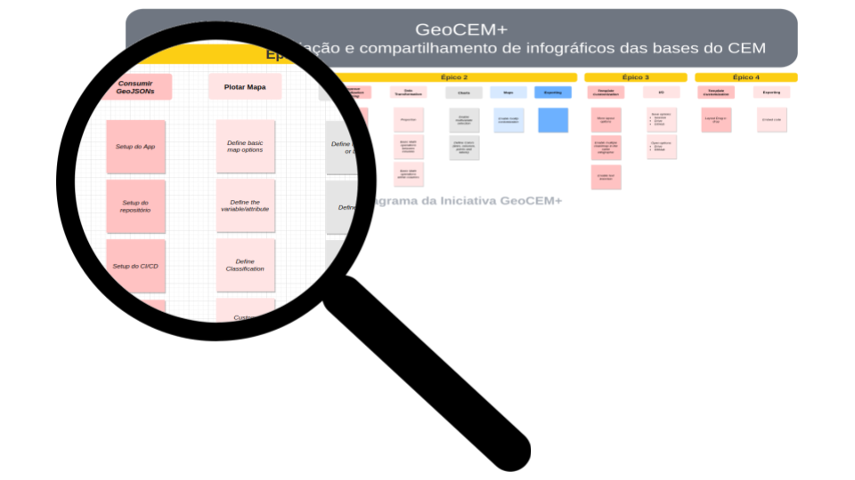
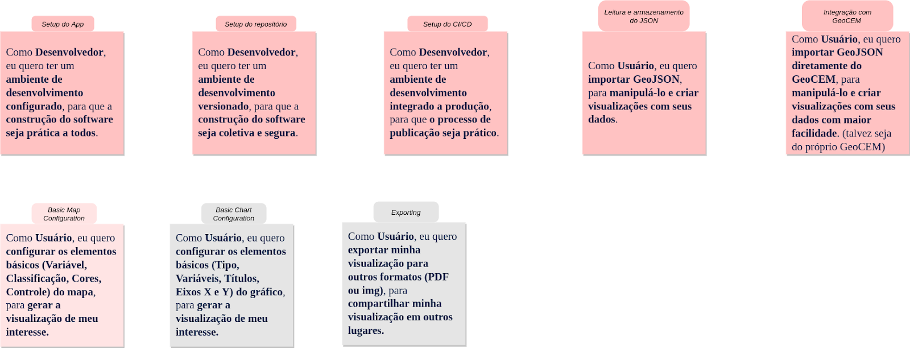
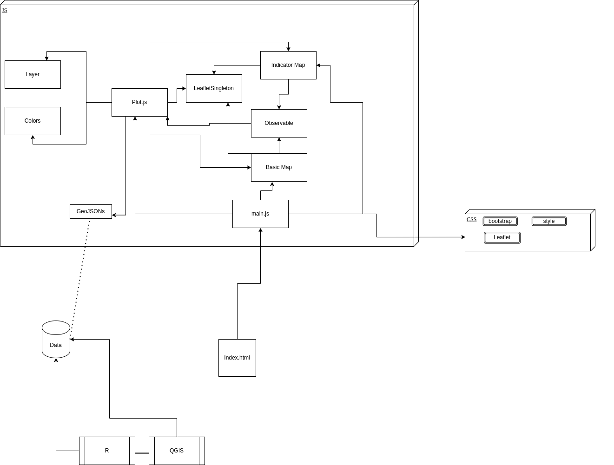
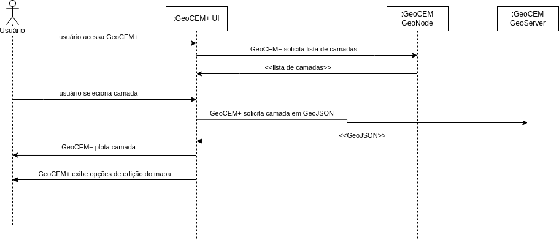
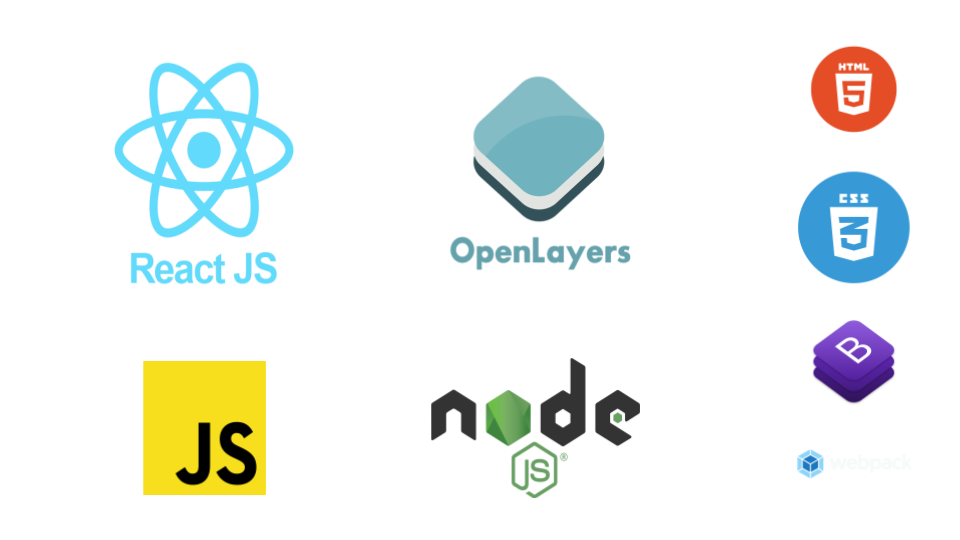

Escolas da RMSP

Mapa Interativo das Escolas da RMSP
- Dados sobre as escolas
- Dados sociodemográficos contextuais
Motivação
- Web mapping
- Consulta eficiente de grandes volumes de dados
MEAN Stack


Arquitetura
Fonte e Processamento de Dados
- Sistema de Informação Geográfica (SIG)
- IBGE
- Censo demográfico de 2010
- Inep
- Censos Escolares
- Prova Brasil (ANEB/SAEB)
- Exame Nacional do Ensino Médio (Enem)
Ambiente de Produção
- InterNuvem USP
- Compartilhado com DataCEM, Fórum e o WikiDados
- Configuração do Servidor
- Sistema operacional Linux (distribuição Ubuntu 16.04 de 64 bit)
- Disco I de sistema de 8GB
- 2 Discos de armazenamento, de 92 GB e outro de 200 GB
- Espaço não utilizado reservado para reconfiguração dos discos I, II, III de 50GB
- 8 vCPU de 2.3Ghz,
- Memória de 32GB RAM
- Ip pública: 200.144.244.241
- Softwares
- MongoDB 3.4.9
- NodeJS 7.10.1
- 4.2.0
Infográficos / GeoCEM+

Infográficos
Conjunto de visualizações de dados interativas produzidos a partir das pesquisas e bases de
dados desenvolvidas pelo CEM
Indicadores de Educação na Capital de São Paulo
https://centrodametropole.fflch.usp.br/pt-br/indicadores-educacao
Financiamento da Educação Pública
https://centrodametropole.fflch.usp.br/pt-br/node/10348
GeoCEM+
Plataforma web integrada
- Criar infográficos online e simplificada
- Exportar como imagem, PDF e código embed
Motivação
- Atuar como mediador para a transferência de tecnologia e difusão do conhecimento
- Aumentar a visibilidade das pesquisas e bases de dados
- Tornar acessível e simplificado a criação de visualizações de dados
- Ampliar o uso das bases de dados nas dimensões exploratórias e analíticas
- Diminuir a complexidade de manutenção de software
Abordagem de desenvolvimento
- Software livre
- Desenvolvimento Interativo e Incremental
- Integração e Entrega Contínua (continuous integration/continuous delivery)

Metodologia de Desenvolvimento

Agile, User Stories, Épicos e Iniciativas

Users Stories

Arquitetura

Especificação GeoCEM+

Stack Tecnológico
